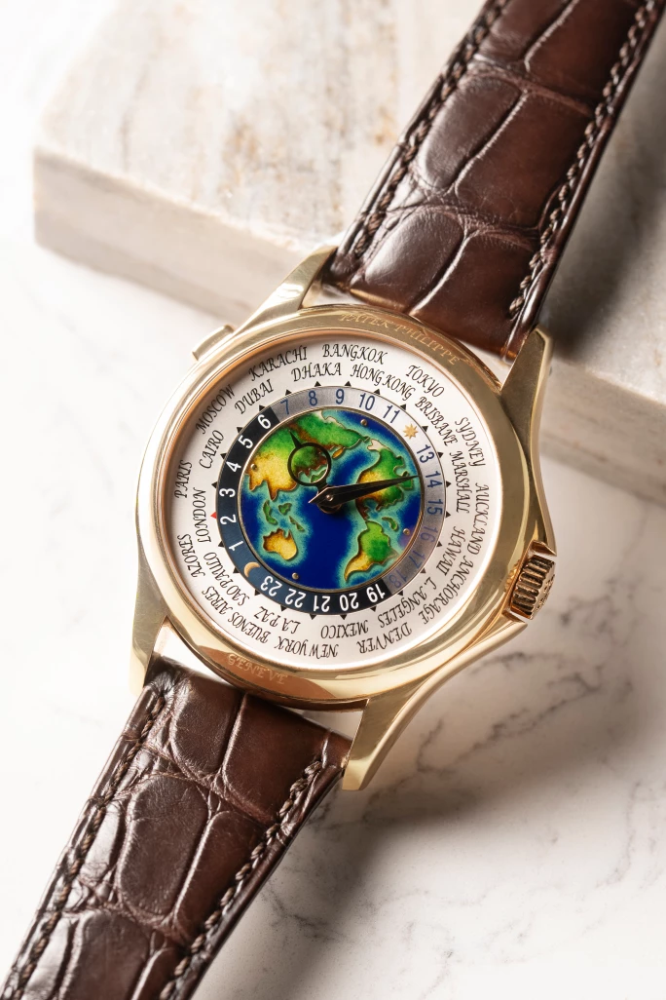
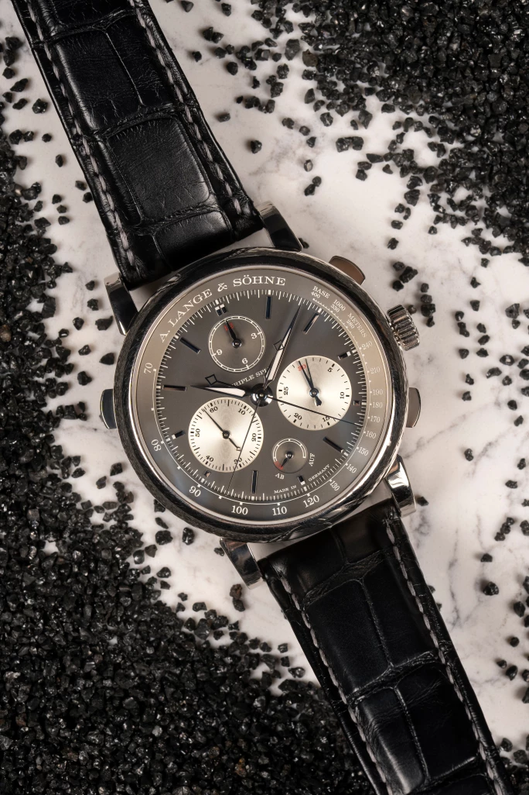
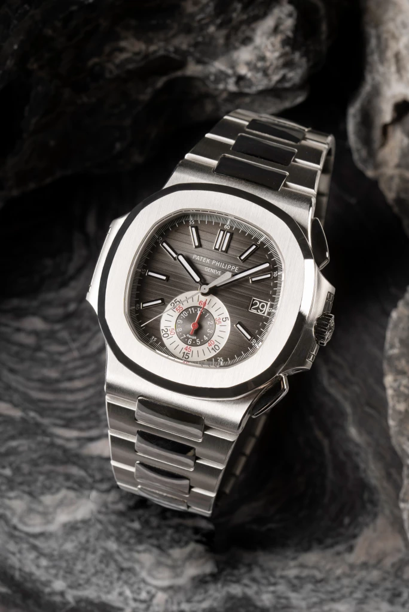
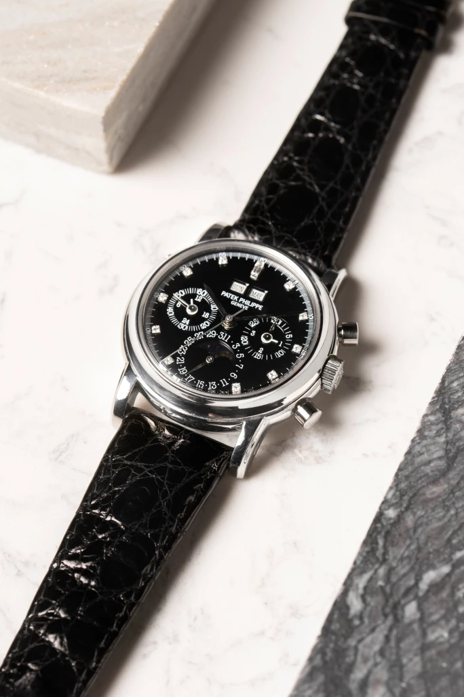
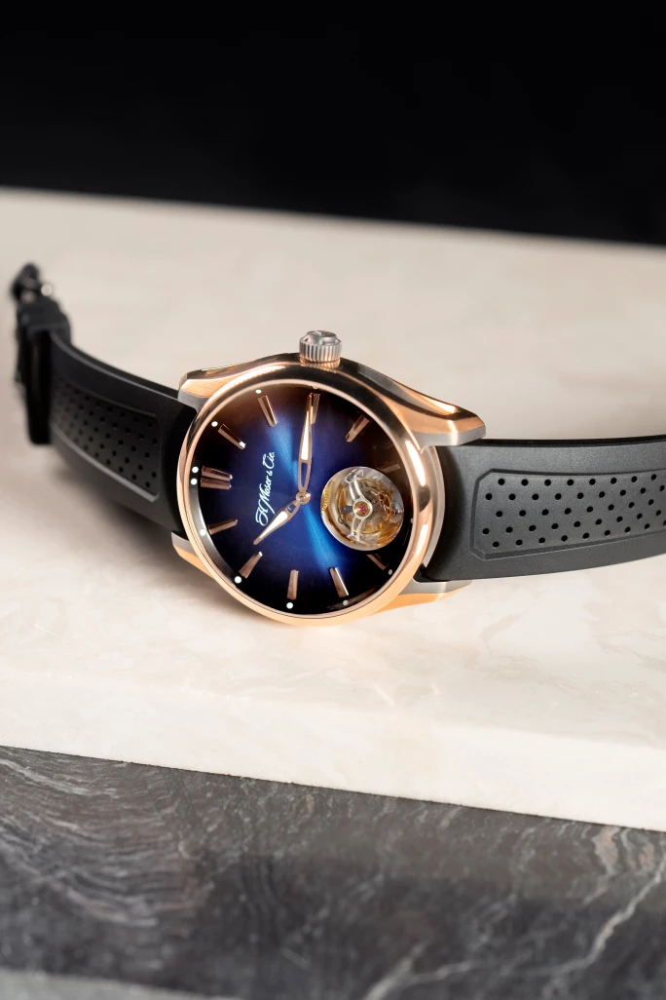
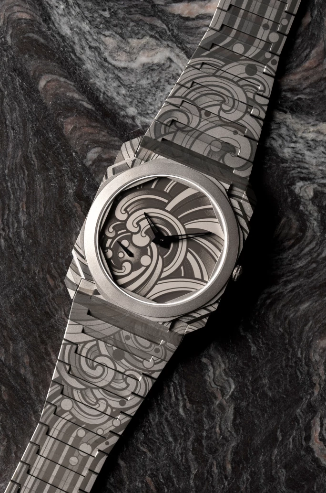

譯自 Caleb Anderson · Sotheby's Hong Kong · 2023年7月12日
香港蘇富比七月帶來各大鐘錶名家的珍貴時計精品，分別配備計時、萬年曆和世界時間等不同複雜功能，錶迷萬勿錯過。
鐘錶世界廣闊精彩，各大品牌都有為人津津樂道的傳奇故事，腕錶成交價更是屢創新高，成為圈內佳話，為藏家和鐘錶愛好者帶來無限驚喜。在五花八門的製錶技術中，複雜功能最引人入勝，它不但為時計增添功能，巧妙的機芯設計更充滿難解的奧秘。
深諳複雜功能的獨特魅力，頂級品牌紛紛致力研究、開發和推出複雜功能時計，展現自家的精良技藝。在即將舉行的香港鐘錶拍賣會中，蘇富比呈獻多款配備複雜功能的時計臻品，以饗藏家。
複雜功能的大世界

百達翡麗 | 型號5131 | 粉紅金世界時間腕錶，備掐絲琺瑯錶盤，約2016年製 | 估價 700,000 - 900,000 港元
腕錶功能的種類繁多，不勝枚舉，最簡單的功能是在僅顯示時間的腕錶上添加日期。從簡入繁，腕錶還可配備星期顯示、計時碼錶或兩地時間。再進一步的話，腕錶可以將星期、日期及年份顯示叠加其他技術屬性，延伸出全日曆、年曆或萬年曆功能。在最極致的情況下，腕錶甚至可以結合多種複雜功能——「超複雜功能」（grand complication）腕錶具備的複雜功能根據型號或製錶商而有所不同，但通常包含計時、三問報時、萬年曆和月相顯示。
今季鐘錶拍賣網羅不少配備複雜功能的珍稀時計，其中一枚是百達翡麗型號 5131粉紅金腕錶，它的掐絲琺瑯錶盤上有亞洲、大洋洲和美洲地圖。這個型號具備的世界時間與兩地時間功能相似，跨時區的時間同樣一目了然，但不同之處在於前者能同時追蹤全球多個城市的時間。世界時間功能匠心獨運，喚起走遍全球探索冒險的精神，同時亦因其機械工藝複雜，製作及完善過程艱難，絕對是兩地時間功能的昇華。
計時功能越見精湛

朗格 | Triple Split 型號424.038F | 限量版白金三追針飛返計時腕錶，備動力儲備顯示，約2019年製 | 估價 800,000 - 1,600,000 港元
雖然計時功能與最基本的腕錶功能（即只顯示時間或顯示時間和日期）差不多普遍，但其設計和製作過程比後兩者繁複得多。因此，計時功能一直是製錶師埋首細作的主打功能；許多鐘錶世家都會藉此一展實力。
長久以來，朗格在計時碼錶領域領先同儕，而型號 424.038F 三追針飛返計時腕錶便是當中的佼佼者。這款限量版白金腕錶配備世上首款能夠比較多個小時的械追針計時機芯，是薩克森製錶師卓絕工藝和技術的最新典範。這枚腕錶與獨特的複雜功能流露朗格一直秉承的創新精神，成為製錶業精益求精的圭臬。

百達翡麗 | Nautilus 型號5980 | 精鋼飛返計時鏈帶腕錶，備日期顯示，約2010年製 | 估價 600,000 - 800,000 港元

百達翡麗 | 型號3970E | 鉑金鑲鑽石萬年曆計時腕錶，備月相、24小時及閏年顯示，約1995年製 | 估價 1,000,000 - 2,000,000 港元
除了朗格，百達翡麗亦分別以簡約和繁複的風格演繹計時腕錶，展示精湛的工藝，是雄踞鐘錶市場的另一重要品牌。百達翡麗 Nautilus 型號 5980精鋼飛返計時碼錶配備日期顯示，較為罕見。飛返計時碼錶的吸引之處在於用家能夠省卻停止的步驟；只需按鈕一次，運行中的計時指針便會即時歸零重置，並隨即重新計時。這款精巧優雅的 Nautilus 運動腕錶集合飛返計時和日期顯示，實屬一款出色非凡的多功能腕錶。
百達翡麗型號 3970E亦將現身今季拍賣，它是百達翡麗極為罕有的萬年曆計時腕錶，還具備月相、24小時及閏年顯示。這枚鉑金腕錶鑲嵌鑽石，盡顯優雅精緻，延續百達翡麗世代流傳的貴族風範。
不可小覷的巧思

H. Moser & Cie Pioneer Tourbillon 型號3804-0900 | 限量版粉紅金及 DLC 塗層處理鈦金屬陀飛輪腕錶，約2022年製 | 估價 260,000 - 420,000 港元
除了複雜功能，現今市場受眾亦對一些相對特殊的領域更加好奇。有趣的是，有些錶看上去繁複精緻，實際卻不具備傳統意義上的複雜功能。陀飛輪腕錶就是一個完美例子，因為陀飛輪的作用只是提升機芯運行的準確度，並沒有任何附加功能。
無論如何，陀飛輪背後所涉及的工藝複雜精細，極具收藏價值。這次拍賣包括一枚 H. Moser & Cie Pioneer Tourbillon 型號 3804-0900。這枚限量版粉紅金和 DLC 塗層處理鈦金屬腕錶配備漸變色錶盤和鏤空陀飛輪，機械性能和美學兼備；儘管只簡單顯示時間，亦無損其稀有地位。
同樣地，與藝術家合作設計的腕錶未必包含複雜功能，但仍然講求精密製作以饗同好。以Octo Finissimo Tattoo Acqua 型號 103707為例，寶格麗與獨立腕錶零售品牌 Chronopassion 攜手合作，選用超薄鈦金屬 Octo Finissimo，打造出這款以紋身為靈感的限量版腕錶。

寶格麗 | Octo Finissimo Tattoo Acqua 型號103707 | 全新限量版鈦金屬鏈帶腕錶，為 Chronopassion 而製，約2022年製 | 估價 200,000 - 300,000 港元
市場需求始終熱熾
雖然新的石英和電子機芯可以高效準確地記錄和測量時間，但機械腕錶處處皆藝術，精密嚴謹的設計令佩戴者在指針行走的滴答聲下感受到時光流轉，切實活在當下。
隨著腕錶收藏市場近年越見蓬勃，即使相對小眾的領域亦漸受關注。藏家和鐘錶愛好者一如以往積極尋找能代表個人風格的款式，可見複雜功能腕錶的熱潮方興未艾，未來仍大有潛力。